Fikirden Fiziksel Parçaya
3B baskı, prototipi günlere değil saatlere indirir; aparat ve yedek parçayı tedarik zincirinden çıkarıp masanıza taşır. Cadbim; UltiMaker donanımı, malzeme danışmanlığı ve baskı yazılımını birlikte kurar.

Eklemeli imalat, parçayı bir bloktan eksilterek değil, malzemeyi katman katman ekleyerek üretir. Bunun ilk sonucu hızlı prototiplemedir: tasarımcı, mühendis ve üretici tasarımı hızla iyileştirebilir; kalıp ve takım maliyeti ortadan kalktığı için deneme yapmanın bedeli düşer.
İkinci sonuç geleneksel yöntemlerle üretilmesi zor ya da imkânsız geometrilerin mümkün hâle gelmesidir; iç kanallar, kafes yapılar ve tek parçaya indirgenmiş montajlar gibi. Üçüncüsü ise talep anında üretimdir: aparat, mastar ve yedek parça stokta tutulmak yerine gerektiğinde basılır.
UltiMaker tarafında S serisi, 2,85 mm filamentle çalışan açık malzeme ekosistemi sunar; Marketplace üzerinden üretici onaylı baskı profilleri indirilerek üçüncü taraf malzemeler elle ayar yapmadan kullanılabilir. Yeni nesil S serisinde Cheetah hareket planlayıcı, hız ile kalite arasındaki ödünleşmeyi belirgin biçimde azaltmaktadır.
Doğru cihaz seçimi
Parça boyutu, malzeme ve tolerans beklentinize göre S serisi, Factor 4 veya Method ailesinden uygun model belirlenir.
Malzeme danışmanlığı
PLA, PETG, ABS, TPU, naylon ve karbon takviyeli kompozitler arasında uygulamaya uygun seçim ve profil kurulumu.
Yazılım zinciri
UltiMaker Cura ile dilimleme, kurumsal dağıtım için Cura Enterprise, filo yönetimi için Digital Factory.
Tasarım tarafı
Autodesk Fusion ve Netfabb ile baskıya hazırlık, parça yönlendirme, destek ve kafes yapı optimizasyonu.
Yazıcı Seçimi & Kurulum
İhtiyaca göre S, Factor veya Method serisi; kurulum ve devreye alma.
Malzeme Danışmanlığı
PLA’dan PPS-CF kompozite 300+ malzemede doğru seçim.
Baskı Hazırlığı
Cura profilleri ve Netfabb ile geometri optimizasyonu.
Filo & İş Yönetimi
Digital Factory ile çok yazıcılı ortam yönetimi.
Uygulama Geliştirme
Fikstür, aparat ve son kullanım parça senaryoları.
Servis & Destek
Yetkili servis, yedek parça ve bakım anlaşmaları.
Çözümün her adımında devreye giren yazılım ve donanımlar.

Autodesk Netfabb
Eklemeli imalat için baskı hazırlığı ve üretim optimizasyonu yazılımı.

Fusion
Tasarımdan üretime uzanan bulut tabanlı entegre CAD/CAM/CAE platformu.
UltiMaker S Serisi
Profesyonel masaüstü 3D yazıcılarla güvenilir ve hassas üretim.
Factor 4 Serisi
Endüstriyel üretime uygun UltiMaker 3D yazıcı serisi.
Method XL
Büyük parçaların üretimine uygun endüstriyel 3D yazıcı.
Sketch Sprint
Hızlı konsept doğrulama için kompakt 3D yazıcı çözümü.
Cura
3D baskı hazırlığı için ücretsiz, endüstri standardı dilimleme yazılımı.
Digital Factory
Üretim süreçlerini dijitalleştiren uçtan uca akıllı fabrika çözümleri.
Bu çözümü kurduğumuz sektörler ve iş akışları.
Makine & Üretim
Makine imalatı ve üretim sektörüne yönelik tasarım ve mühendislik çözümleri.
Otomotiv
Otomotiv sektörüne yönelik tasarım, mühendislik ve görselleştirme çözümleri.
Eğitim
Eğitim kurumlarına yönelik yazılım lisanslama ve öğretim çözümleri.
Savunma ve Havacılık
Havacılık ve savunma sektörüne yönelik ileri mühendislik çözümleri.
Beş adımlı uygulama metodolojimizle sürecin tamamını yönetiyoruz: ihtiyaç analizi, kurgu, devreye alma, yaygınlaştırma ve sürdürme.
Uygulama Keşfi
Hangi parçaların 3B baskıyla kazanç sağlayacağı analiz edilir (aparat, prototip, yedek parça).
Donanım & Malzeme Seçimi
Parça gereksinimlerine göre yazıcı ve malzeme portföyü belirlenir.
Baskı Profili Doğrulama
Kritik parçalarınız için profil ve yönlendirme stratejileri doğrulanır.
Filo & İş Akışı
Digital Factory ile kuyruk, yetki ve bakım düzeni kurulur.
Ölçüm & Yaygınlaştırma
Parça başı maliyet ve tedarik süresi kazançları raporlanır.
Yüzlerce kurulumdan damıtılmış, işleyen iyi uygulama setimiz.
Baskı yönü mühendisliği
Mukavemet ve yüzey kalitesi yönlendirmeyle tasarlanır; şansa bırakılmaz.
Malzeme saklama disiplini
Filamentler nem kontrollü saklanır; baskı kalitesi mevsime göre değişmez.
Doğrulanmış profil kütüphanesi
Parça ailesi + malzeme eşleşmeleri kayıtlı profillerle basılır.
Adet-maliyet eşiği
Hangi adede kadar baskı, nereden sonra kalıp — veriyle bilinir.
Filo bakım takvimi
Nozzle, kayış ve kalibrasyon rutini plansız duruşu önler.
DfAM eğitimi
Ekip, eklemeli üretime göre tasarlamayı öğrenir; destek ve süre azalır.
Aradığınız yanıt burada yoksa uzmanımıza doğrudan sorabilirsiniz.
3B yazıcı satın alırken nelere dikkat etmeliyim?
Hangi malzemeyi kullanmalıyım?
Cura ücretli mi?
Eğitim ve servis desteğiniz var mı?
Tedarik sürecin başlangıcıdır; kurulum, lisanslama, kullanıcı eğitimi, teknik destek ve yenileme yönetimi tek muhatap üzerinden yürütülür.
Esnek Abonelik ve Lisans Modelleri
Tek ve çok kullanıcılı abonelikler, 1 ve 3 yıllık dönemler, koleksiyon avantajı — kullanım profilinize uygun planı birlikte belirliyoruz.
Yetkili Eğitim Merkezi (ATC)
Autodesk Yetkili Eğitim Merkezi olarak sertifikalı eğitimler; İzmir merkez ofisimizde sınıf ve çevrim içi programlar.
Türkçe Teknik Destek
Kurulum, lisans yönetimi ve teknik sorularınızda Türkiye'den, Türkçe, aynı gün yanıt.
Kurulum, Lisanslama ve Aktivasyon Desteği
Yazılımların kurulum, lisanslama ve aktivasyon süreçlerinin tamamında teknik destek sağlıyoruz.
Sürücü ve Uyumluluk Çözümleri
İşletim sistemlerinde sürücü kurulumları ve yazılım uyumluluğu konularında teknik çözüm üretiyoruz.
Bu alanda destek alın
Teklif, danışmanlık veya eğitim için iletişime geçin.